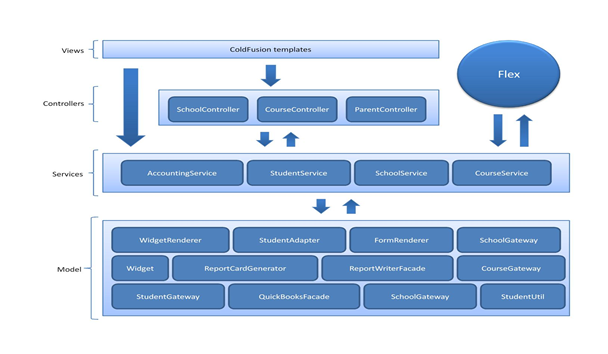
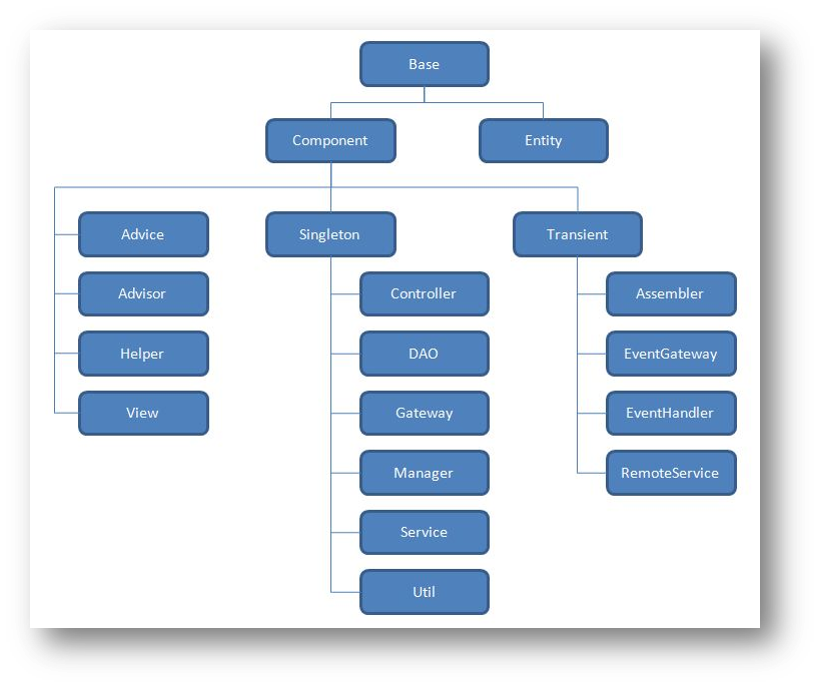

Loading...
This presentation is an HTML5 website
Press → key to advance.
- ← and → to move around.
- Ctrl/Command and + or - to zoom in and out if slides don’t fit.
- S to view page source.
- T to change the theme.
- H to toggle syntax highlight.
- N to toggle speaker notes.
- 3 to toggle 3D effect.
- 0 to toggle help.
Minerva
A brief history of the little framework that could
Josh Knutson
- Software Developer 3
- @ Imagtrend for 8+ years
- Working in CF, JS, CSS, and some .NET
Today, we will cover...
Quick Recap

Roman name of Greek goddess Athena |
|
Township in NW Minnesota by Bemidji |
- Shared Code repository
- Not project specific
- No code related to schools, incidents, etc
- Extensible plug-ins in seperate repo
- Unit testing rolled with repo
- Document Generator rolled with repo
- https://svn.imagetrend.com/svn/minerva/trunk/src/
Architecture
- Service Oriented Architecture
- Model-View-Controller design pattern
- 
- Open source dependency injection framework for ColdFusion
- Based off the Spring framework for Java
- Manages components (CFCs)
- http://www.coldspringframework.org/
- Utility components used for common methods
- Managing scoped data (request, session)
- Displaying form fields
- Formatting data
- Accessing config settings
- Created by ColdSpring post-processor
- HelpersScopePostProcessor.cfc
- Available to all singleton beans and views
<bean id="helpers"
class="minerva.utils.beans.factory.HelpersScopePostProcessor"
bean-post-processor="true">
<property name="directories">
<list>
<value>/cornerstone/app/helpers/</value>
<value>/minerva/app/helpers/</value>
</list>
</property>
</bean>
- Annotation-based autowiring
<cfcomponent beans="userService">- Created by ColdSpring post-processor
- BeansScopePostProcessor.cfc
- Helps keep ColdSpring XML small
- Available inside all singleton beans
- Contain core functionality
- Project components should extend base components
- 
- minerva.base.Component
- getBean()
- getBeans()
- containsBean()
- getBeanFactory()
- minerva.base.View
- getValue()
- setValue()
- hasValues()
- getValues()
|
|
|
|
- Parent environments in environment.xml that can inherit for faster setup of new environments
- Packages in AssetManager
- Display helpers using permissions
- XML based managers
- AccessManager
- ActionManager
- ActivityManager
- AlertManager
Problems
What problems arose from the shared framework

Questions?